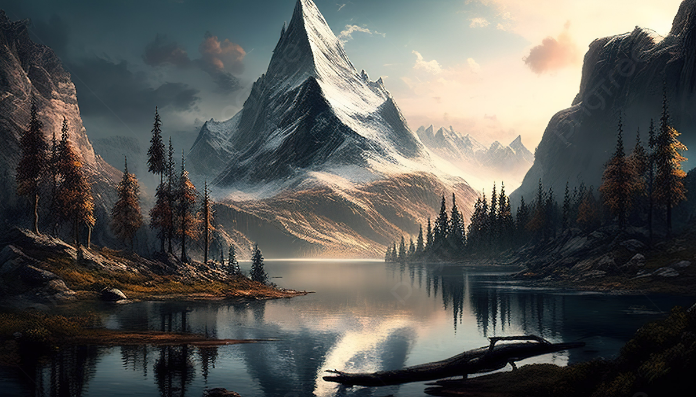
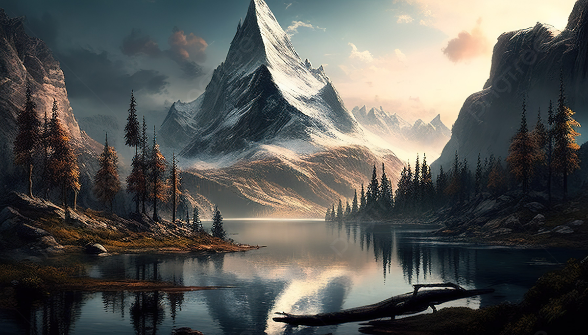

My name is Sthitipragyan Mohanty. I am 20 years old. I am from Keonjhar, Odisha. I completed my matriculation from Nirmala Convent School, Keonjhar and my intermediate from Kendriya Vidyalaya, Keonjhar. Currently, I am pursuing my Bachelor of Technology degree from Veer Surendra Sai University of Technology, Burla from the department of Computer Science and Engineering. My hobbies are painting, sketching, and listening to music. My aim is to become a data scientist.
My Interests mostly lie in coding as a whole. Java was the first language that I learned and after that went on to Python and C. I am yet to learn a more about the whole concept of coding though. So, I hope that I get to learn new topics during my time here in VSSUT. I know that the job of a Software Engineer is very hectic but I really want to see how my future as a Software Developer will turn out to be. Along with coding, painting was one thing that I'd have had loved to consider as my core subject. It is something that has become my escape from my day-to-day hectic life. It is a great stress reliever for me so i hope that even in the future, i will remain this intact with painting as I am now. Apart from these two, I really like listening to music, mostly pop and retro.
Qualifications:
2020 |
Matriculation |
2022 |
Intermediate |
 
